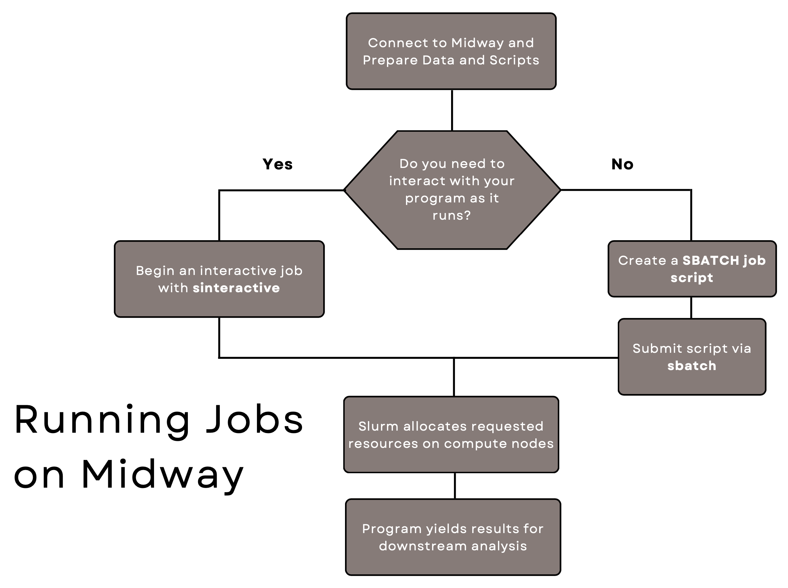

Submitting Jobs
This page describes how users can use Slurm scheduler to submit jobs (either Interactive or Batch) to Midway. The flowchart below illustrates the main steps in that process.

Interactive Jobs
Interactive jobs are the most intuitive way to use Midway, as they allow you to interact with the program running on compute node/s (e.g., execute cells in a Jupyter Notebook) in real-time. This is great for exploratory work or troubleshooting. An interactive job will persist until you disconnect from the compute node, or until you reach the maximum requested time.
To request an interactive job with default parameters, run the following command while connected to a login node:
sinteractive
sinteractive --account=pi-<PI CNETID>
Note
On Midway3 you always need to explicitly specify the account to be charged for the job. Slurm will use the default partition (Midway2: broadwl, Midway3: caslake) if you do not specify it.
Note
On Midway3 to use the partitions with AMD CPUs, it is recommended that you log in to the midway3-amd.rcc.uchicago.edu login node and submit jobs from this node.
As soon as the requested resources become available, sinteractive will do the following:
1. Log in to the compute node/s in the requested partition.
2. Change into the directory you were working in.
3. Set up X11 forwarding for displaying graphics.
4. Transfer your current shell environment, including any modules you have previously loaded.
By default, an interactive session times out after 2 hours. If you would like more than 2 hours, be sure to include a --time=HH:MM:SS flag to specify the necessary amount of time. For example, to request an interactive session for 6 hours, run the following command:
sinteractive --time=06:00:00
sinteractive --account=pi-<PI's CNETID> --time=06:00:00
There are many additional options for the sinteractive command, including options to select the number of nodes, the number of cores per node, the amount of memory, and so on. For example, to request exclusive use of two compute nodes on the default CPU partition for 8 hours, enter the following:
sinteractive --exclusive --partition=broadwl --nodes=2 --time=08:00:00
sinteractive --account=pi-<PI's CNETID> --exclusive --partition=caslake --nodes=2 --time=08:00:00
For more details about these and other useful parameters, read below about the sbatch command.
Tip
All options available in the sbatch command are also available for the sinteractive command. It's Slurm all the way down!
Debug QOS
There is a debug QOS (Quality of Service) setup to help users quickly access some resources to debug or test their code before submitting their jobs to the main partition. The debug QOS will allow you to run one job and get up to 4 cores for 15 minutes without consuming SUs. To use the debug QOS, you have to specify --time as 15 minutes or less. For example, to get 2 cores for 15 minutes, you could run:
sinteractive --qos=debug --time=00:15:00 --ntasks=2
qos for your account with the command rcchelp
rcchelp qos
Batch Jobs
The sbatch command is used to request computing resources on the Midway clusters. Rather than specifying all the options in the command line, users typically write a sbatch script that contains all the commands and parameters neccessary to run a program on the cluster. Batch jobs are non-interactive, as you submit a program to be executed on a compute node with no possibility of interactivity. A batch job doesn't require you to be logged in after submission, and ends when either (1) the program is finished running, (2) job's maximum time is reached, or (3) an error occurs.
SBATCH Scripts
In an sbatch script, all Slurm parameters are declared with #SBATCH, followed by additional definitions.
Here is an example of a Midway3 sbatch script:
#!/bin/bash
#SBATCH --job-name=example_sbatch
#SBATCH --output=example_sbatch.out
#SBATCH --error=example_sbatch.err
#SBATCH --account=pi-shrek
#SBATCH --time=03:30:00
#SBATCH --partition=caslake
#SBATCH --nodes=4
#SBATCH --ntasks-per-node=14
#SBATCH --mem-per-cpu=2000
module load openmpi
mpirun ./hello-mpi
And here is an explanation of what each of these parameters does:
Option |
Description |
|---|---|
--job-name=my_run |
Assigns name my-run to the job. |
--output=my_run.out |
Writes console output to file my_run.out. |
--error=my_run.err |
Writes error messages to file my_run.err. |
--account=pi-shrek |
Charges the job to the account pi-shrek (account format: pi-<PI CNetID>) |
--time=03:30:00 |
Reserves the computing resources for 3 hours and 30 minutes max (actual time may be shorter if your run completes before this wall time). |
--partition=caslake |
Requests compute nodes from the Cascade Lake partition on the Midway3 cluster. |
--nodes=4 |
Requests 4 compute nodes |
--ntasks-per-node=14 |
Requests 14 cores (CPUs) per node, for a total of 14 * 4 = 56 cores. |
--mem-per-cpu=2000 |
Requests 2000 MB (2 GB) of memory (RAM) per core, for a total of 2 * 14 = 28 GB per node. |
In this example, we have requested 4 compute nodes with 14 CPUs each. Therefore, we have requested a total of 56 CPUs for running our program. The last two lines of the script load the OpenMPI module and launch the MPI-based executable that we have called hello-mpi.
Submitting a Batch Job
Continuing the example above, suppose that the sbatch script is saved in the current directory into a file called example.sbatch. This script is submitted to the cluster using the following command:
sbatch ./example.sbatch
sbatch ./<your_sbatch_file>
See Example batch scripts for typical use cases.
You can find more example sbatch submission scripts in the RCC SLURM workshop materials